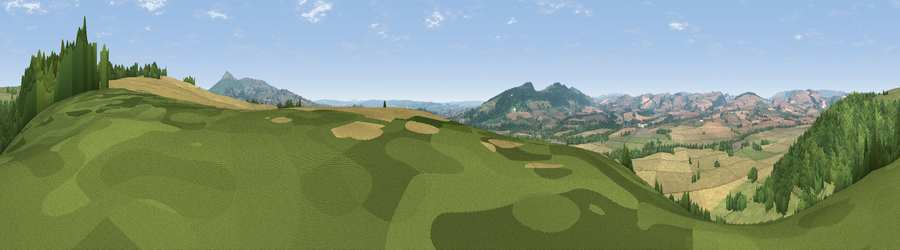

Viewpoint near Stanton Lacy
#9428 in England · top 24% of its area beats it · near Stanton Lacy · access?Where it is
The exact computed spot (SO 51275 78075). Click the marker for map links.
Public access: no public right of way or access land is recorded at this exact spot — it may be on private land. Computed from Natural England's CRoW access layer and OpenStreetMap rights of way — not the legal definitive map. Always verify locally.
The view, rendered

A 360° render of this exact spot computed from the terrain model, tree cover and land cover — summer colours, afternoon light, calibrated against photographs of famous viewpoints. Real trees, hedges and buildings will differ in detail.
The panorama
Grey silhouette: terrain skyline in each direction (720 bearings, Earth curvature and refraction included). Dashed green: skyline with trees (+15 m) and buildings (+8 m) as obstacles. Blue strip: how far the ground is visible on each bearing.
Where the view opens
Wedge length = distance to the farthest visible ground on that bearing (vegetation-aware). Rings at 10, 25 and 50 km.
What fills the view
35% grassland · 32% cropland · 32% woodland · 1% built-up
Angular shares of the visible panorama (visual magnitude), not map area. Landscape diversity 0.50 (0–1 Shannon).
Key numbers
More beautiful places nearby
The staircase of upgrades: each row has a higher view potential than everything closer. Driving times are estimates from straight-line distance, calibrated against real road routing — check an actual route before setting out.
| Place | Direction | Drive | Score |
|---|---|---|---|
| Viewpoint near Stanton Lacy | N · 2 km | ~6 min | 64.0 |
| Viewpoint near Stoke St Milborough | NE · 6 km | ~12 min | 70.1 |
| Bringewood Hill | SW · 6 km | ~13 min | 82.2 |
| Titterstone Clee | E · 8 km | ~16 min | 83.8 |
| The Lawley | N · 19 km | ~33 min | 85.8 |
| Viewpoint near Little Wenlock | NNE · 32 km | ~49 min | 86.6 |
| North Hill | SE · 41 km | ~60 min | 86.8 |
| Worcestershire Beacon | SE · 42 km | ~61 min | 87.1 |
52.39851, -2.71754 · source: screening · position refined by local search. Computed location — check access rights before visiting.